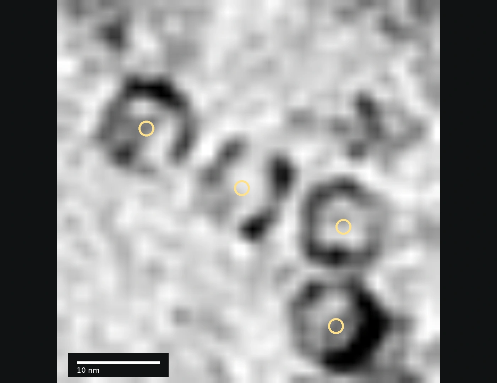
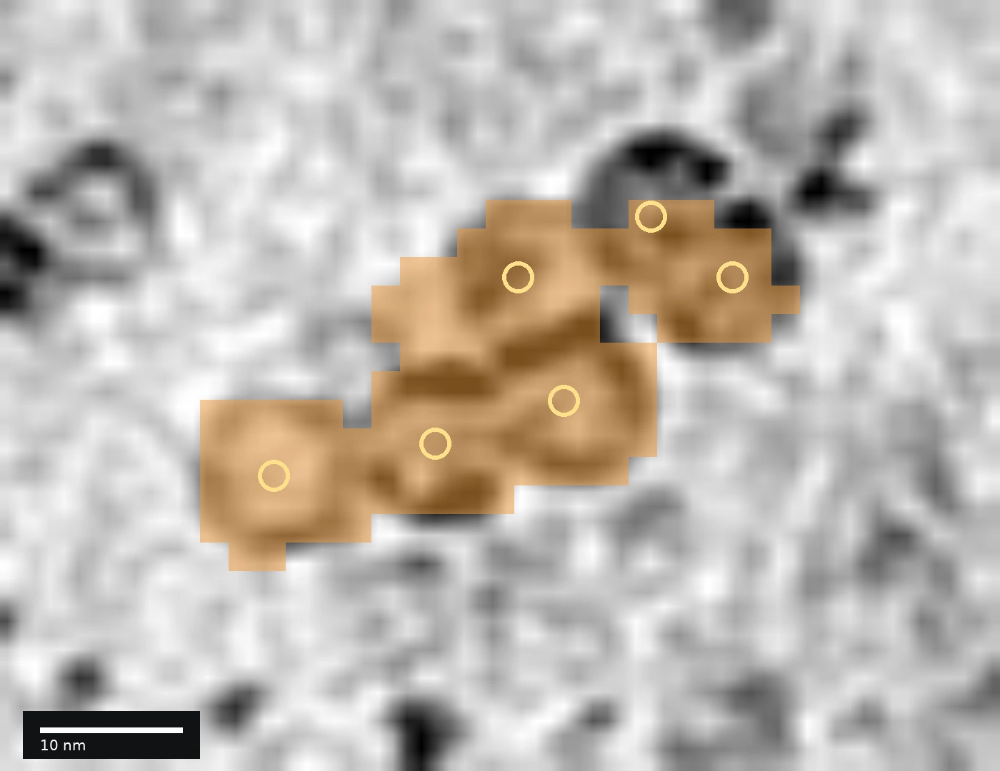

CZII
72.92F₄+6.31 pts vs. OCTOPI · 66.61
CRYO-ELECTRON TOMOGRAPHY · PARTICLE LOCALIZATION
Predict particle centers directly from point annotations.
Higher localization accuracy across imaging settings. Fast whole-tomogram inference.
A DIFFERENT FORMULATION
To our knowledge, the first supervised point-set formulation for particle localization in reconstructed cryo-ET tomograms. The model directly predicts continuous particle coordinates and classes.
DeepFinder · DeepETPicker · OCTOPI
TomoDETR
Representation schematic. The baselines use their own native center-extraction procedures. TomoDETR predicts coordinates before final duplicate suppression and score selection.
ACROSS IMAGING ENVIRONMENTS
Realistic phantom, simulated tomograms, and cellular data under VPP and defocus imaging.
+6.31 pts vs. OCTOPI · 66.61
+1.02 pts vs. DeepETPicker · 92.06
+0.87 pts vs. DeepETPicker · 81.47
+1.63 pts vs. DeepETPicker · 80.04
| Method | CZII weighted F₄ | SHREC2021 F₁ | VPP pooled F₁ | Defocus pooled F₁ |
|---|---|---|---|---|
| DeepETPicker | 60.13 | 92.06 ± 0.71 | 81.47 ± 5.73 | 80.04 ± 1.40 |
| DeepFinder | 51.65 | 79.59 ± 2.52 | 77.80 ± 8.24 | 77.25 ± 1.85 |
| OCTOPI | 66.61 | 85.40 ± 0.62 | 72.60 ± 17.75 | 72.33 ± 4.01 |
| TomoDETR w/o CWQR | 70.07 ± 0.40 | 86.99 ± 2.31 | 80.16 ± 5.25 | 79.08 ± 0.90 |
| TomoDETR | 72.92 ± 0.45 | 93.08 ± 0.16 | 82.34 ± 5.91 | 81.67 ± 0.56 |
Cards compare mean scores against the strongest evaluated external baseline per setting. ± is sample SD over three seeds (CZII, SHREC) or three fixed splits (DeePiCt). External CZII baselines are single reproduced runs. Models are trained separately for each dataset or imaging condition.
FAST INFERENCE
The lowest recorded inference time among the compared methods.
5.185 s local detector pipeline
0.148 s additional CWQR stage
32.35 min for 364 CZII test tomograms
Current manuscript, computational-cost table: single RTX 5090, serial execution, CZII test set. TomoDETR includes image loading, normalization, detector/export/NMS and the separately measured cache/graph/refiner/NMS stage; excludes process startup, warm-up and output persistence.
QUALITATIVE EVIDENCE · CROWDED PARTICLES
Follow the actual outputs: four neighboring apo-ferritin particles become one DeepFinder foreground component. Native mean-shift produces two inaccurate centers. TomoDETR localizes all four.

Four particles · one connected foreground · two extracted centers, neither within the 3 nm tolerance.
TomoDETR: four correct centers, no false positives in this crop.
The displayed surface is built from the saved semantic labelmap. Gold circles mark the four reference centers; red crosses mark the two native mean-shift centers.
Drag to rotate the recorded foreground.
Same physical crop, grayscale mapping and recorded predictions in both lanes. Background: mean of 22 original slices. Matching is in 3D. Playback advances through saved pipeline stages, not simulated optimization iterations.
FOLLOW THE NATIVE POST-PROCESSING
A second crowded region, with six reference particles, exposes the intermediate outputs of each baseline. Select a method. Watch its pipeline unfold, or scrub to any stage.

Cases A and B are different selected crowded regions. Every stage within a case uses the same field of view. The volume-wide comparison is reported above. Source and display details ↗
OPEN SOURCE
Model code, dataset configurations, training and prediction commands,
and the evidence behind these visualizations.